Should a Paper Be Rejected Simply Because the Method Is “Too Simple”?
If a paper whose experiments clearly work is rejected, and the reviewer’s explanation is simply “the method is too simple,” how would you react?
Recently, Georgia Tech professor Mark Riedl complained on Twitter that one of the reasons his paper was rejected in AAAI Phase 1 was that “the method seems too simple.” The post triggered a broad discussion.
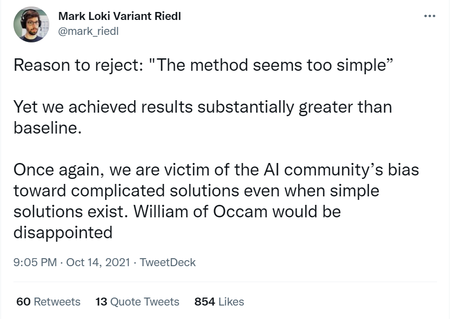
Riedl listed two criticisms from the review. The first was that the method was too simple. The second was dissatisfaction that the paper relied on human evaluation rather than BLEU score—even though the task was story generation.
His response was simply: “I can’t even.”
Many researchers clearly related to the experience. Some shared similar stories.
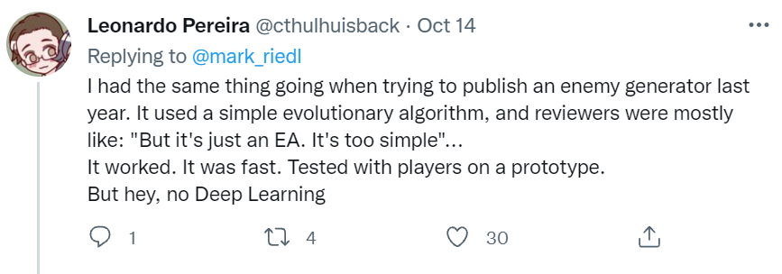
Others reduced the logic to an absurd causal rule: “I can understand your paper, therefore I reject it.”
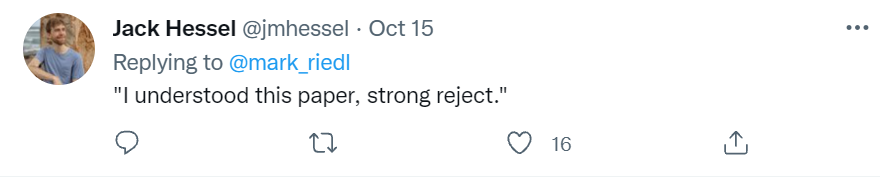
Some offered a darker observation about human nature: people only like what they cannot understand.
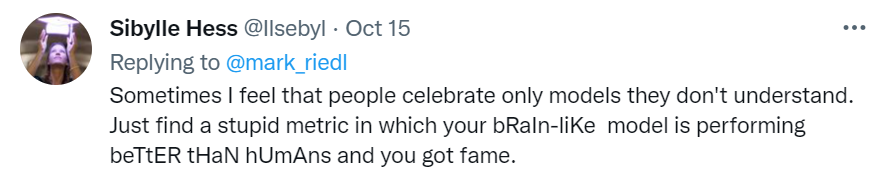
Another comment proposed a wonderfully dialectical ideal: the highest level of paper submission is to make one reviewer think the work is too simple and another think it is too difficult.
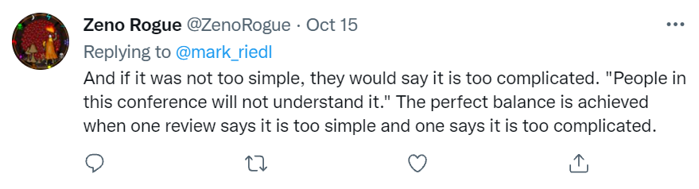
Some people tried to define simplicity itself and emphasized its power.
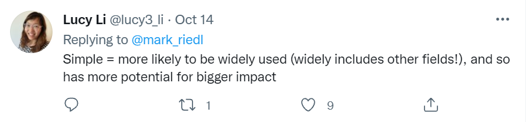
Others invoked Einstein: “Everything should be made as simple as possible, but no simpler.”
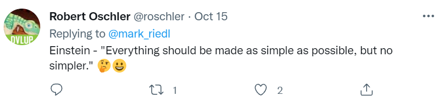
And some attacked BLEU directly, calling it one of the most destructive inventions in computer science.
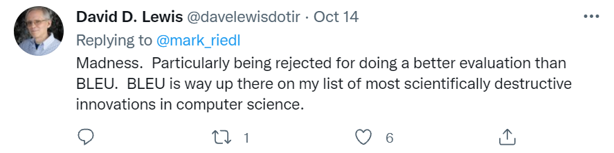
One person even turned the whole situation into a story; in meme form, it looked roughly like this:
Among all the comments, one line cut directly to the point: “THIS. Simplicity is a feature, not a bug.”
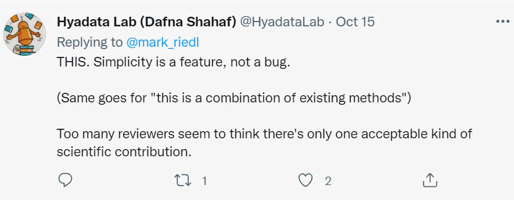
It is easy to make a value judgment about the narrow question “Should a paper be rejected because its method is simple?” What is more interesting are two deeper points raised by Riedl: Occam’s razor—“entities should not be multiplied without necessity”—and academia’s possible bias against simple methods.
The Misuse of Occam’s Razor
In his tweet, Riedl invoked Occam’s razor in his defense: if unnecessary complexity should be avoided, why should a simple and effective solution be required to use a more complicated model?
But Occam’s razor is an empirical heuristic, not a truth-preserving law. It does not guarantee the correct answer in every situation. In fact, the examples used to defend it are often carefully selected stories that function more like educational parables than rigorous inductive evidence.
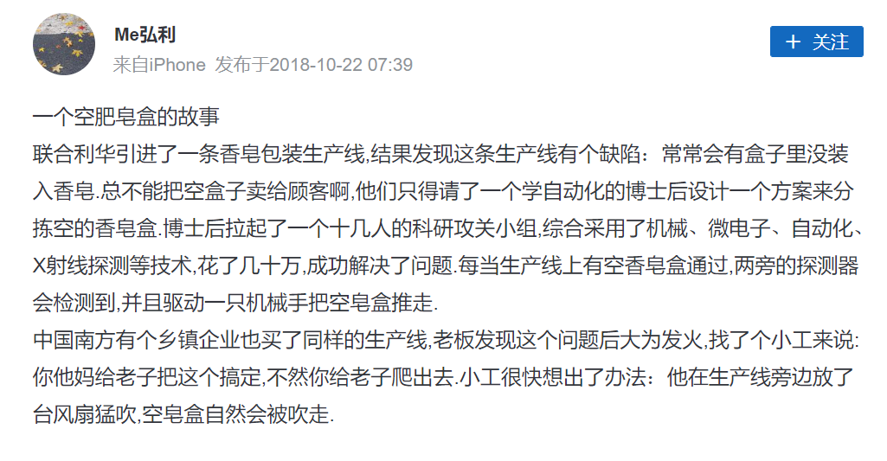
One commenter therefore challenged Riedl’s defense directly.
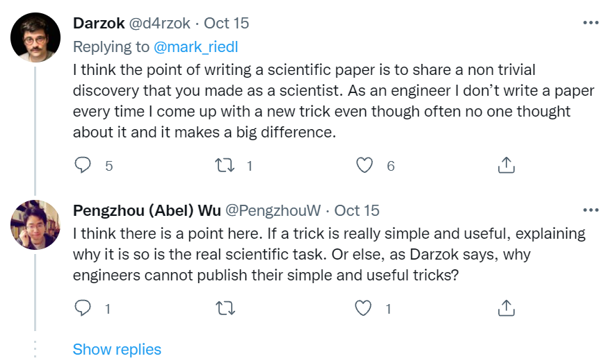
Science and engineering do not always use the same criteria for a “good method.” Riedl’s principle that “simple and effective is enough” may be entirely reasonable in engineering, yet scientific publication may demand more: generality, explanation, novelty, and a contribution that extends beyond one working implementation. Science naturally has a richer evaluation system than “it works.”
At the same time, as another commenter noted, science and engineering are deeply intertwined. It is difficult to draw a clean line where one side only deduces and explains from theory while the other only induces and summarizes from experiments. So this distinction does not fully defeat the appeal of simplicity either.
To understand the issue more deeply, we can return to Occam’s razor itself. In one sense, debates over simplicity principles such as Occam’s razor lead directly into Karl Popper’s arguments about falsifiability.
Logical positivists such as Bertrand Russell attempted to reduce complex propositions to atomic propositions whose truth could be verified through experience. The proposition “all swans are white,” for example, could be broken into basic observations such as “this is a swan” and “this is white.”
From a logical-positivist perspective, if all of the atomic statements supporting a proposition are empirically verified, the proposition can be treated as true. If every swan I have observed is white, then “all swans are white” appears to be confirmed.
This view provided a philosophical foundation for long-standing scientific empiricism: a theory is good insofar as it explains observed phenomena well. The discovery of Neptune supported Newtonian gravitation; over-parameterized models often overfit, encouraging us to prefer simpler alternatives; and such observations partly motivate Occam’s razor.
Popper, however, attacked the leap from “all observed atomic statements are true” to “the universal proposition is true,” because that leap depends heavily on induction. No matter how many white swans I observe, I cannot logically rule out the possibility of encountering a black swan tomorrow.
This criticism undermined the idea that induction has universal validity. Once empirical confirmation can no longer automatically establish scientific truth, the fact that a theory has repeatedly been verified does not by itself make it scientific. A geocentric model may predict sunrise and sunset accurately without thereby becoming a sound scientific theory.
Popper therefore used falsifiability as a boundary between science and non-science: a scientific theory must expose itself to the possibility of empirical refutation. A proposition that can never be contradicted by any possible observation is not scientific in this sense.
From this perspective, the sentence “do not multiply entities beyond necessity” is itself difficult to treat as a scientific rule because “necessity” has no precise, falsifiable definition. A researcher can always invent a justification for why some elaborate combination of methods was “necessary.”
Seen this way, the simplicity principle becomes less of a theorem and more of a scientific trial-and-error heuristic. It does not prove that “my model is simple, therefore my model is good.” It tells us that when experimentally comparing hypotheses, we should prefer explanations that require fewer assumptions when all else is equal.
If a reviewer instead asks, “If you never tried more complex models, how can you know that your simple model is already good enough?” Occam’s razor alone cannot fully answer the criticism.
Bias Against “Simple” Methods
Popper’s critique of induction has implications far beyond the debate over Occam’s razor. In a sense, Popper dismantled the idea that modern scientific research is an absolute path toward truth. If deduction merely makes explicit what is already hidden in the premises, while induction cannot establish universally valid laws, then how exactly is human knowledge connected to “truth”? Scientific research begins to look less like a purely rational structure built on truth and more like a process in which belief, intuition, inspiration, and other non-rational factors also play roles.
That brings us directly to the second issue: academia’s possible bias against simple methods. In the discussion around Riedl’s rejection, many comments hinted at a troubling possibility: complexity is sometimes treated not as one optional means of solving a problem, but as a mechanism for raising the barrier to entry.
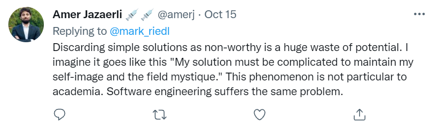
In the social sciences, the concept of a paradigm has become almost conventional. The original meaning of “paradigm” referred to a pattern of word forms, but philosopher Thomas Kuhn transformed the term in The Structure of Scientific Revolutions to describe the shared beliefs, theories, ways of thinking, experimental techniques, and tacit assumptions through which members of a scientific community understand one another.
Kuhn never gave the concept one perfectly precise definition. In a narrow sense, a paradigm can refer to a standard experimental procedure or operational pattern. In a broad sense, it can refer to a field’s shared worldview.
▲ Thomas Kuhn
When we encounter a text-classification problem, why do methods such as TextCNN or BERT immediately come to mind? Why do we begin by thinking about tokenization and feature representations? From a paradigm perspective, the answer is straightforward: we belong to the scientific community of NLP and therefore share a collection of theories, terms, beliefs, and tools. When someone says “Transformer,” everyone understands that they mean a useful model architecture rather than an electrical transformer or a shape-shifting robot.
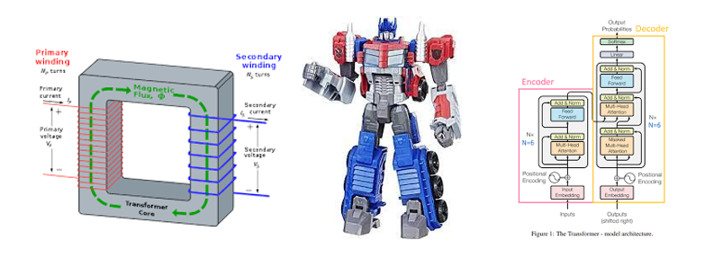
The downside is that if a scientific community is organized around shared beliefs rather than an inevitable chain of pure reason, bias against simplicity can become a structural feature of the community rather than merely an irrational preference of one reviewer.
How many people in AI today still believe in the field’s highest
original ambitions? More specifically, how many believe that the current
paradigm can actually achieve the kind of general artificial
intelligence imagined at the 1956 Dartmouth workshop? As that belief
becomes weaker or more obscured, publishing papers can begin to carry
primarily methodological meaning. Even if 2 can be
expressed perfectly well as 1 + 1, writing
10000 - 9998 may look sufficiently elaborate to support
another paper. When the underlying problem is no longer being
transformed, “higher, faster, stronger” methodology becomes one of the
most visible remaining dimensions of progress.
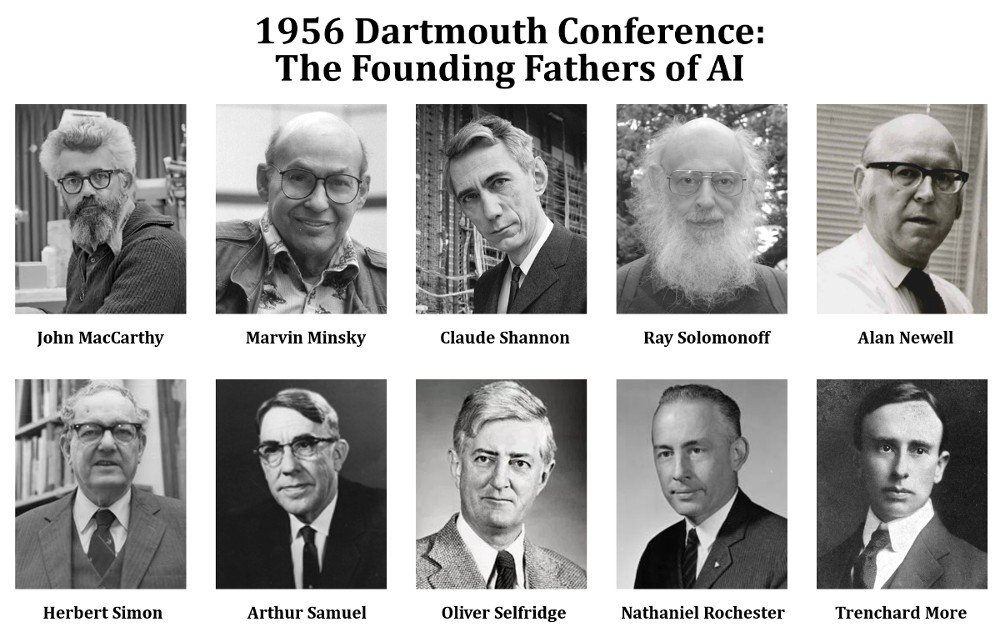
Perhaps AI is, to some extent, avoiding several fundamental questions. When philosophers of AI ask questions such as: “If neural networks are essentially statistical models, is today’s AI really a science of intelligence or simply a form of applied statistics?”; “If neural networks have limited behavioral flexibility and plasticity, how can they model open-ended intelligence?”; or “When the distribution of raw input data changes abruptly, can a neural model remain reliable?”, practitioners often respond with silence rather than direct engagement.
As one computer-vision scholar once observed, technical development is often driven by the particular interests of small groups of researchers, while methods are tailored to specific problems. Algorithms, programs, and techniques are therefore constrained by the creativity and interests of individual researchers.
In other words, AI still lacks a sufficiently unified set of concepts and methods for integrating results across domains, tasks, and datasets. It also lacks—or sometimes deliberately obscures—a common highest-level problem that everyone agrees the field is trying to solve. Attention is instead pushed downward toward methodological competition on particular benchmarks. In that environment, accuracy may keep rising alongside rapidly expanding parameter counts, and a method that is “simple,” even if effective, can suffer an aesthetic disadvantage in the eyes of reviewers merely because it looks too small or too plain.
Final Thoughts
Physicist and science-studies scholar John Ziman described the contemporary scientific world as a “post-academic” era. In this era, a scientific community is no longer an idealized group devoted only to truth. It is a social institution influenced by multiple interest groups and continuously exchanging products, resources, and legitimacy with society and politics. Scientists therefore cannot be treated as perfectly rational abstractions; they are real individuals embedded in social systems. Once the assumption of perfect rationality is removed, scientific ethics becomes necessary.
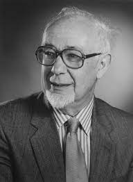
But scientific ethics should not be treated as an external rule imposed on researchers. It is an internal requirement of a healthy discipline. Research cannot be reduced to a single pursuit of a few “grand questions,” but without some awareness of a field’s fundamental problems and aspirations, it becomes difficult to develop genuine internal norms. Once scientific research is completely reduced to merely another way to make a living, the intrinsic authority of scientific ethics weakens as well.
So the narrow question—“Should a paper be rejected merely because the method is too simple?”—is easy to answer. More interesting is what we mean when we say “no.” What kind of scientific community are we implicitly hoping for when we believe simplicity should not count against good work? That may be the more meaningful question.